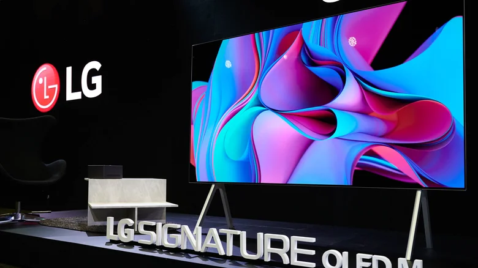
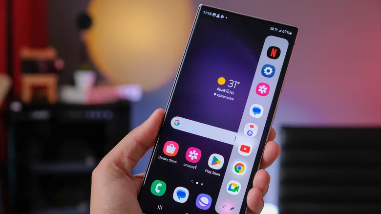

Trending Gadgets
Thinner and faster compact laptops
- Laptops are a primary tool for work, enabling people to work from home comfortably.
- The portable nature of laptops allows users to avoid being confined to a desk with a traditional computer.
- Laptops are designed to be smaller and lighter than desktop PCs, making them ideal for travel.
- Less weight is a key advantage for a device meant to be portable.
- In 2024, laptops are expected to become even thinner and faster than ever before.

PHOLED televisions
- Televisions have significantly advanced over the past decade, adopting new technologies.
- High-definition (HD) screens and higher resolutions, including 4K displays, have become standard.
- 4K displays offer stunning 3840 x 2160 pixel resolution, widely supported by:
- Streaming services
- Television networks
- Video game consoles
- In the past two years, the adoption of 8K televisions has been relatively slow.
- Consumers appear to be looking for more exciting innovations in the television market.

Samsung Galaxy S24
- Apple's primary competitor in the phone market is Samsung, particularly with its Galaxy S brand.
- Details about Samsung's upcoming Galaxy S24 phone are scarce.
- Samsung has historically released its flagship Galaxy S phones in January or February.
- The Galaxy S24 will likely follow the same release pattern.
A cheaper Meta VR headset
- Virtual reality (VR) technology is growing in popularity daily.
- Brands like Meta, PlayStation, Valve, and HTC have released VR headsets with varying levels of success.
- The technology is impressive and continues to advance over time.
- High costs remain a major barrier, preventing widespread adoption of VR.
- Even the cheapest VR headsets cost several hundred dollars.
- Additional expenses include software and compatible hardware required to run the devices.